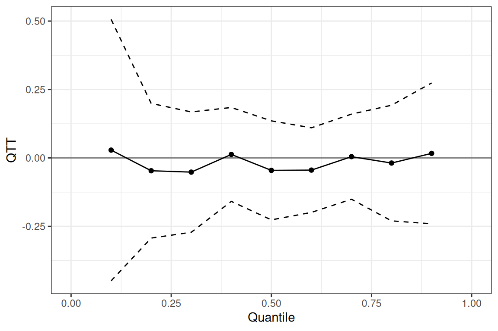
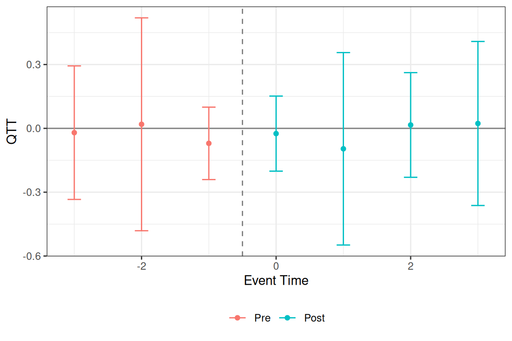
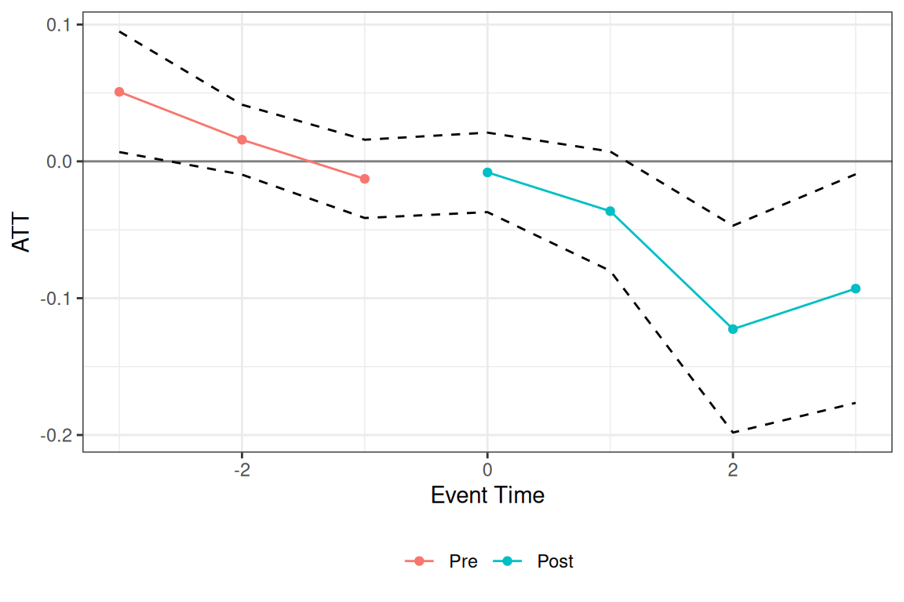

Staggered Treatment Adoption with the qte Package
2026-11-23
Source:vignettes/staggered-adoption.qmd
Introduction
In many empirical settings, units adopt treatment at different points in time — a structure called staggered treatment adoption. For example, states may adopt a policy in different years, or firms may receive an intervention at different times during a study period.
All seven panel estimators in qte support staggered adoption via the same interface: specify the outcome (yname), the first-treatment-period cohort variable (gname, with 0 for never-treated units), calendar time (tname), and a unit identifier (idname). The package follows the approach of Callaway and Sant’Anna (2021), computing group-time effects for every cohort and period , then aggregating these into overall, group-specific, and event-study (dynamic) summaries.
The primary output of interest is the QTT curve — the treatment effect at each quantile of the treated group’s outcome distribution. Each QTT run also reports the ATT implied by the same assumption, and tests whether the QTT curve is flat at the ATT.
This vignette demonstrates the full applied workflow using the mpdta dataset. For conceptual background on the identification assumptions behind each estimator, see vignette("panel-estimators").
mpdta is a balanced panel of 500 US counties observed annually from 2003 to 2007. The outcome is lemp (log county-level employment). Counties are grouped by first.treat, the year they first adopted a minimum wage increase (2004, 2006, or 2007); counties with first.treat == 0 never adopt.
table(mpdta$first.treat)
#>
#> 0 2004 2006 2007
#> 1545 100 200 655QTT curve estimation
We begin with cic() using gt_type = "qtt" to estimate the full QTT curve. For each aggregation, the group-time cells’ distribution functions are mixed first (with the same weights as the corresponding ATT aggregation) and the mixture is then inverted at each requested quantile. This gives the QTT for the treated population as a whole, which averaging cell-level QTTs would not.
summary() prints the overall QTT curve, the event-study and cohort QTTs at the median (change this with probs), and the ATTs:
summary(res_qtt)
#>
#> Overall QTT curve:
#> Quantile QTT Std. Error [95% Simult. Conf. Band]
#> 0.1 0.0278 0.1014 -0.2933 0.3489
#> 0.2 -0.0230 0.0778 -0.2694 0.2234
#> 0.3 -0.0103 0.0517 -0.1741 0.1535
#> 0.4 -0.0690 0.0554 -0.2444 0.1064
#> 0.5 -0.0185 0.0480 -0.1705 0.1336
#> 0.6 -0.0149 0.0405 -0.1430 0.1132
#> 0.7 0.0389 0.0578 -0.1440 0.2217
#> 0.8 -0.0387 0.0581 -0.2227 0.1454
#> 0.9 0.0135 0.0852 -0.2563 0.2832
#>
#> Dynamic effects (quantile 0.5):
#> Event Time QTT Std. Error [95% Simult. Conf. Band]
#> -3 0.0159 0.0651 -0.2018 0.2337
#> -2 0.0868 0.0697 -0.1647 0.3383
#> -1 -0.0683 0.0553 -0.2291 0.0925
#> 0 -0.0237 0.0490 -0.2024 0.1550
#> 1 -0.0429 0.0656 -0.2377 0.1518
#> 2 -0.0960 0.1004 -0.4135 0.2214
#> 3 -0.1972 0.1344 -0.6485 0.2542
#>
#> Group effects (quantile 0.5):
#> Group QTT Std. Error [95% Simult. Conf. Band]
#> 2004 -0.1391 0.0854 -0.4026 0.1245
#> 2006 0.0149 0.0564 -0.1779 0.2077
#> 2007 -0.1181 0.0741 -0.3648 0.1285
#>
#> ATT, and test of QTT(tau) = ATT for all quantiles:
#> Parameter ATT Std. Error [95% Pointwise Conf. Int.] p (QTT = ATT)
#> Overall -0.0197 0.0147 -0.0485 0.0092 0.99
#> Event time -3 0.0508 0.0261 -0.0002 0.1019 0.95
#> Event time -2 0.0158 0.0148 -0.0131 0.0448 0.90
#> Event time -1 -0.0128 0.0158 -0.0438 0.0182 0.92
#> Event time 0 -0.0081 0.0143 -0.0361 0.0199 0.98
#> Event time 1 -0.0364 0.0241 -0.0837 0.0109 0.89
#> Event time 2 -0.1226 0.0459 -0.2126 -0.0325 0.43
#> Event time 3 -0.0930 0.0494 -0.1897 0.0038 0.54
#>
#> ---
#> Signif. codes: `*' confidence band does not cover 0
#> Simultaneous bands are uniform over quantiles, for each QTT curve.
#> p (QTT = ATT): bootstrap sup-t test, from the same draws, that QTT(tau) - ATT = 0
#> at every estimated quantile.Overall QTT curve
autoplot() plots the overall curve with a uniform confidence band, and the overall ATT as a horizontal line:
autoplot(res_qtt)
Dynamic QTT — event study by quantile
type = "dynamic" plots the QTT at selected quantile(s) across event times. The plot_probs argument selects which quantiles to show.
autoplot(res_qtt, type = "dynamic", plot_probs = 0.5)
Multiple quantiles can be overlaid by passing a vector to plot_probs (values must be in the estimated probs grid). Confidence intervals are then hidden by default (plot_ci = TRUE shows them):
Pre-treatment estimates near zero support the identifying assumption. The post-treatment pattern shows the estimated QTT in each period after adoption.
QTT by cohort
type = "group" shows each cohort’s QTT, averaged over its post-treatment periods:
autoplot(res_qtt, type = "group", plot_probs = 0.5)
Is the effect more than a location shift?
If treatment shifts the whole distribution by the same amount, the QTT equals the ATT at every quantile. Because the QTT run also computes the ATT from the same bootstrap draws, the difference has its own uniform confidence band, and the last column of the ATT table in summary() above is the p-value of the test that at every estimated quantile. This is a valid test, unlike checking whether the ATT lies inside the QTT band, which ignores that the two estimates are correlated.
autoplot(res_qtt, type = "qtt_minus_att")
Here the band covers zero at every quantile (p-value 0.99), so there is no evidence that the minimum wage changed the shape of the employment distribution beyond shifting it. In general, a band that excludes zero at some quantile rejects a pure location shift: the treatment changes the shape of the outcome distribution, which the ATT alone would miss. Note that this compares distributions. Even a location shift of the distribution is consistent with individual effects that vary across units.
ATT and event-study summary
When only the ATT is needed, gt_type = "att" is faster: it skips the distribution functions. Event times are pre-treatment periods; are post-treatment.
#>
#> Overall ATT:
#> ATT Std. Error [ 95% Conf. Int.]
#> -0.0197 0.0168 -0.0543 0.015
#>
#>
#> Dynamic Effects:
#> Event Time Estimate Std. Error [95% Simult. Conf. Band]
#> -3 0.0508 0.0239 0.0040 0.0977 *
#> -2 0.0158 0.0169 -0.0174 0.0491
#> -1 -0.0128 0.0143 -0.0409 0.0153
#> 0 -0.0081 0.0164 -0.0402 0.0241
#> 1 -0.0364 0.0231 -0.0817 0.0089
#> 2 -0.1226 0.0418 -0.2045 -0.0406 *
#> 3 -0.0930 0.0527 -0.1962 0.0103
#> ---
#> Signif. codes: `*' confidence band does not cover 0
autoplot(res_att, type = "dynamic")
Comparing estimators
All seven estimators share the same interface. Here we run each with gt_type = "qtt" and probs = 0.5 to compare median QTT estimates. The estimators are listed in the same order as in vignette("panel-estimators").
res_cic <- cic(
yname = "lemp", gname = "first.treat", tname = "year",
idname = "countyreal", data = mpdta,
gt_type = "qtt", probs = 0.5, biters = 100
)
# ... and the same call for qdid(), panel_qtt(), ddid(), mdid(), cdf_did()
# and lou_qtt(), saved as res_qdid, res_pqtt, res_ddid, res_mdid, res_cdf
# and res_lou
median_qtt <- function(res, label) {
row <- res$overall[res$overall$probs == 0.5, ]
data.frame(estimator = label, qtt = round(row$qtt, 4), se = round(row$se, 4),
att = round(res$att$overall$att, 4))
}
do.call(rbind, list(
median_qtt(res_cic, "cic()"),
median_qtt(res_qdid, "qdid()"),
median_qtt(res_pqtt, "panel_qtt()"),
median_qtt(res_ddid, "ddid()"),
median_qtt(res_mdid, "mdid()"),
median_qtt(res_cdf, "cdf_did()"),
median_qtt(res_lou, "lou_qtt()")
))
#> estimator qtt se att
#> 1 cic() -0.0185 0.0477 -0.0197
#> 2 qdid() -0.0406 0.0502 -0.0282
#> 3 panel_qtt() -0.0917 0.0525 -0.0358
#> 4 ddid() -0.0884 0.0458 -0.0453
#> 5 mdid() -0.0429 0.0456 -0.0305
#> 6 cdf_did() -0.0159 0.0529 -0.0305
#> 7 lou_qtt() 0.0107 0.1028 -0.0384Estimates will generally differ because each estimator relies on a different identifying assumption. Similarity across methods strengthens confidence in the findings; divergence warrants investigation of which assumption is more plausible for the application. The ATTs differ too, since each assumption implies its own counterfactual mean. mdid() and cdf_did() both imply mean parallel trends, so their ATT is the usual DiD estimate. panel_qtt()’s default long copula also drops group-time cells without enough pre-treatment periods, so it averages over fewer cells.
Covariates
Each estimator’s assumption can be made conditional on covariates through xformula, as with did::att_gt(). How they enter depends on the estimator:
-
cic(),qdid(),panel_qtt()andddid()estimate conditional outcome distributions, by quantile regression (cond_dist = "qr", the default) or distribution regression (cond_dist = "dr", a logit of on the covariates at a grid of thresholds). Distribution regression also handles outcomes with mass points. -
cdf_did()andlou_qtt()takeest_method = c("aipw", "ipw", "reg"): doubly robust, inverse probability weighting, or outcome regression (lou_qtt()’s outcome regression also takescond_dist). -
mdid()adjusts the comparison group’s mean change by a linear regression on the covariates.
With panel data, covariates that change over time are taken from each group-time cell’s base period (for panel_qtt(), the earliest period the cell uses), so the estimators never condition on covariates measured after treatment. If treated units in some cell have covariate values the comparison group doesn’t span (say, a region with treated units only), the estimators warn, listing the cells; ptetools::check_overlap() reports overlap diagnostics for every cell.
Here we condition on log county population, lpop:
res_cdf_x <- cdf_did(
yname = "lemp",
gname = "first.treat",
tname = "year",
idname = "countyreal",
data = mpdta,
xformula = ~lpop,
est_method = "aipw",
biters = 100,
gt_type = "qtt",
probs = seq(0.1, 0.9, by = 0.1)
)
res_cic_x <- cic(
yname = "lemp",
gname = "first.treat",
tname = "year",
idname = "countyreal",
data = mpdta,
xformula = ~lpop,
cond_dist = "dr",
biters = 100,
gt_type = "qtt",
probs = seq(0.1, 0.9, by = 0.1)
)
autoplot(res_cdf_x)
autoplot(res_cic_x)
Repeated cross sections
If the data are repeated cross sections rather than a panel, set panel = FALSE and omit idname. cic(), qdid(), mdid() and cdf_did() support repeated cross sections, as does lou_qtt() with lagged_outcome_cov = FALSE. ddid() and panel_qtt() need panel data, as does the distribution of individual effects (gt_type = "qott").
res_rcs <- cic(
yname = "lemp",
gname = "first.treat",
tname = "year",
data = mpdta, # no idname
panel = FALSE,
gt_type = "qtt",
biters = 100
)Inference notes
Standard errors are computed with the empirical bootstrap, resampling units (panel) or observations (repeated cross sections) with replacement. The biters argument controls the number of iterations (default 100). Parallel computation is available via the cl argument (cl = 4 uses 4 cores).
-
Clustering.
clustervarsresamples whole clusters at a level above the unit (for example, states), as indid::att_gt(). -
Sampling weights.
weightsnamenames a column of sampling weights, used in every estimation step and in the aggregation across cohorts. -
Confidence bands. With
cband = TRUE(the default) each QTT curve and event study gets a uniform band, with simultaneous coverage over all quantiles or event times. Setcband = FALSEfor pointwise intervals;autoplot()also takescbandto choose which to draw. -
Discrete outcomes. The estimators warn when the outcome looks discrete (a large mass point, or few distinct values). Quantile treatment effects are then usually not point identified, and bootstrap inference can be unreliable;
cdf_did()is the exception for identification.